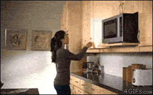

Your browser doesn't support the features required by impress.js, so you are presented with a simplified version of this presentation.
For the best experience please use the latest Chrome, Safari or Firefox browser.
Web Development
Like a BOSS
The Web Sucks...
sometimes...
but hey...
Sometimes it doesn't!
Most of the time it sucks because we are not using the right tool...

... or we're not using the tool right.

.this-is-just-css {
color: blue;
}
Start using less: